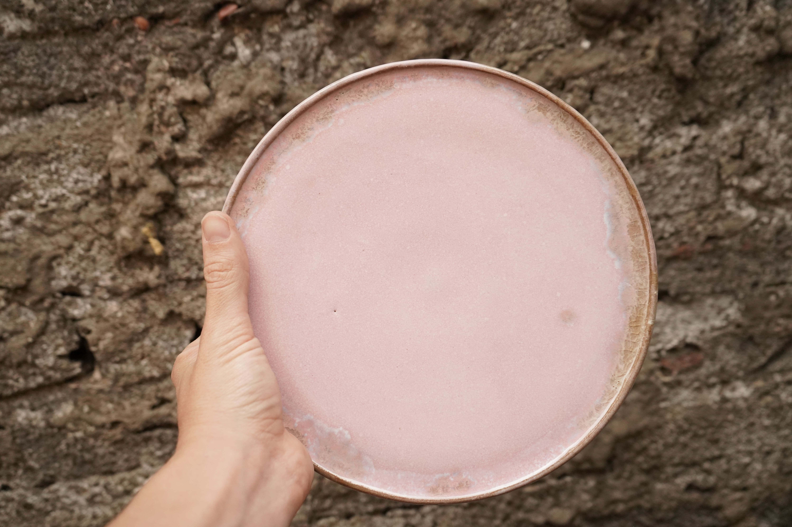
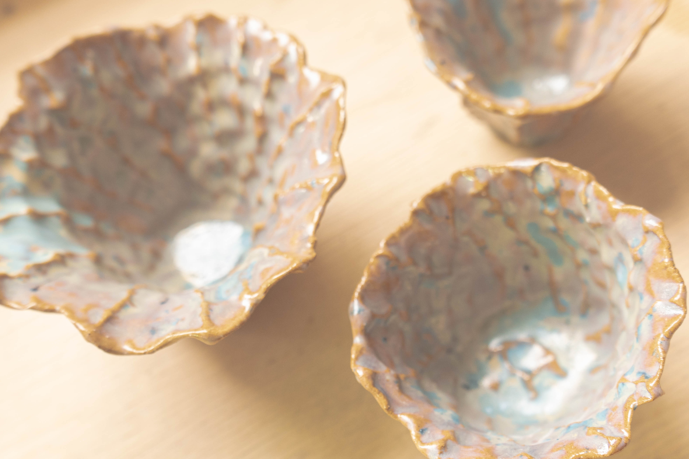
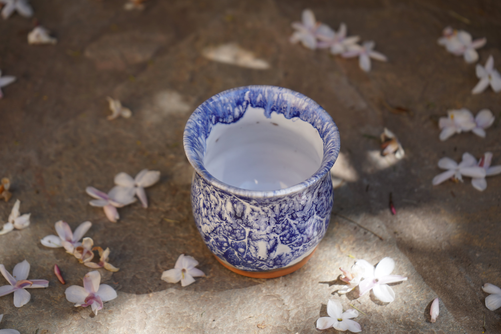
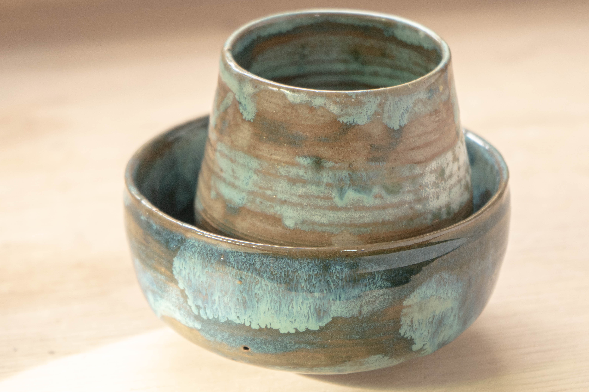
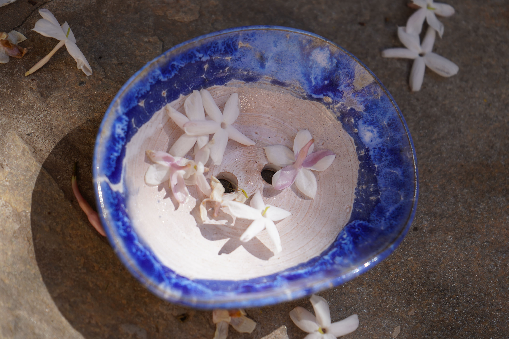
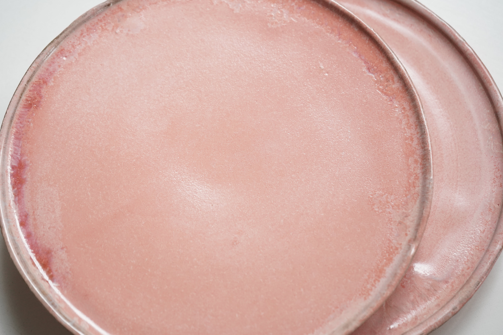

Centrar: ese acto que precede a todos los demás en el torno del alfarero. El poner la arcilla en un pivote que gira y no se tambalea, lo que entonces sea libre de tomar innumerables formas como alfarero y prensa de arcilla unos contra otros. La presión firme, tierna, sensible, que cede como por mucho que lo afirme. Es como un apretón de manos entre dos manos vivas, recibiendo el saludo en el mismo momento en que lo dan. Es esto discurso entre la mano y el barro que me hace pensar en diálogo. Y es un idioma mucho más interesante que el hablado.
vocabulario que trata de describirlo, porque no es hablado por la lengua y labios, sino por todo el cuerpo, por toda la persona, hablando y escuchando. Y también con la escucha me parece que no es el oído el que oye, no es el órgano físico el que realiza ese acto de interioridad receptividad. Es la persona total la que escucha. A veces la piel parece ser el mejor oyente, ya que pica y emociona, digamos a un sonido o un silencio; o la fantasía, la imaginación: cómo irrumpe en el interior imágenes mientras escucha y luego responde presionando su idioma, su formas, en el barro que escucha. Estar abiertos a lo que oímos, estar abiertos en lo que decimos. . .
Como seres humanos que funcionan como alfareros, nos centramos a nosotros mismos y a arcilla. Y todos sabemos lo necesario que es estar "en el centro" nosotros mismos si deseamos llevar nuestra arcilla "al centro" y no simplemente agitarla o intimidarlo. Como organismos en los ritmos naturales de nacimiento, crecimiento y muerte, experimentamos metamorfosis a lo largo de nuestra vida, como nuestro cuerpos crecen y cambian desde la infancia hasta la madurez, a medida que nuestras capacidades para la experiencia interna se agranda y se fortalece. Como alfareros, tenemos un experiencia diaria especialmente inmediata y concreta de estos dos procesos más que físicos. Porque como alfareros manejamos nuestro medio en toda la gama de sus transformaciones. Sacamos nuestra arcilla de su tierra cama; o si no siempre lo cavamos nosotros mismos, sabemos el experiencia de cavarlo y prepararlo. Experimentamos el barro, nosotros experimenta las fuerzas del tiempo y el destino que han transmutado el rock en polvo de plástico. Experimentamos la cerámica en bruto, el repentino hechizo de un acto móvil llevado a la quietud. La olla recién lanzada o construida tiene una cualidad que no se encuentra en ninguna otra fase de su vida.
Parte de nuestro oficio puede ser perpetuar esa "vida" y sentimiento de plasticidad en la piedra rígida. Experimentamos todos los colores y texturas. de la loza en bruto y su decoración. La doble vida del color en la cerámica, sin disparar y disparar. La galleta, el glaseado, los óxidos. Él transformaciones en el horno durante la cocción que seguimos las mirillas, viendo en nuestra imaginación los cambios físicos: la eliminación de agua química, la arcilla "moviéndose" en su forma de gres. Él atmósfera cambiante en el horno durante el período de enfriamiento. ese desmayo brillan justo antes de la oscuridad cuando sacamos el amortiguador por última vez caída de temperatura La olla cocida. Pero incluso la olla cocida permanece en el larga narrativa de estas transformaciones con sólo su propia autenticidad. Porque también desaparecerá; será vendido o regalado. casi será ciertamente se romperá en el tiempo. Los fragmentos se mantendrán con su propio encanto especial y simbolismo. Incluso pueden ser machacados para grog y así entrar corporalmente en el proceso en otro punto inicial. O pueden convertirse en mosaicos para otra experiencia de la forma.
Y aunque las formas cambien, aunque cada momento muera en el siguiente, aunque nada se está haciendo para durar, algo está sucediendo. Cada momento lleva la vida hacia adelante. Es como si la forma que crece dentro de nuestro actúa muda cada momento sucesivo como una piel; es como si el interior forma que crece como un ser dentro de nosotros se lleva a la madurez a través de las muertes sucesivas de sus etapas materiales. Parece que el alfarero y su oficio han tenido un aura especial desde los primeros tiempos. la cerámica es el antiguo ur-craft, derivado de la tierra, orientado al centro, contenedor para alimento, portador de agua. Experiencias de centramiento y de personal la metamorfosis crece dentro de la nave.
Ambas experiencias responden al hambre de libertad del hombre, un estado de ser en el que la relación del hombre con la vida no está obstruida. sin obstrucciones ya sea por conceptos o por miedo o por ignorancia o por deformidad. La libertad nos permite vivir la experiencia por dentro y por fuera. Él forma exterior de la arcilla es la extensión de su centro. Presionamos desde el centro y hacer la olla: el exterior es la superficie del interior. Nos volvemos hacia adentro y hacia afuera con la misma naturalidad.